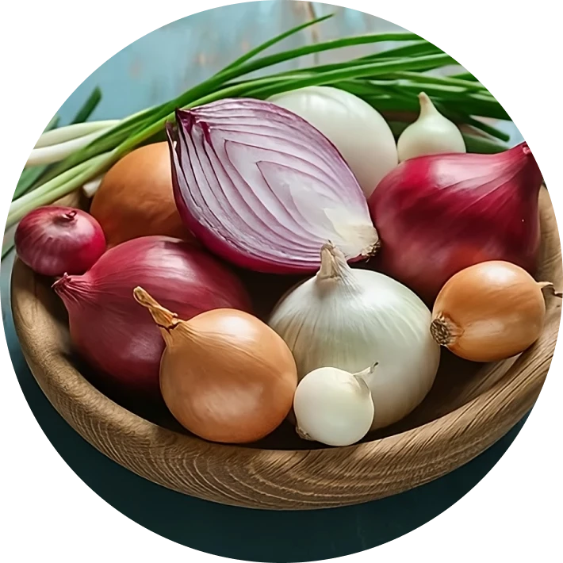

Sal e Vinagre
O choque perfeito de sabores. A combinação ousada da acidez inconfundível do vinagre com a pitada exata de sal. Pringles® Salt & Vinegar entrega uma crocância absurda, zero oleosidade e aquele sabor intenso que te faz querer sempre mais. Quando você faz "pop", simplesmente não tem como parar.


Presunto e Queijo
O sabor reconfortante do queijo derretido com presunto, unidos na crocância perfeita de Pringles®. Abra a lata e deixe essa dupla surpreender o seu paladar.

Páprica
O toque defumado e levemente picante da páprica na medida exata. Uma experiência intensa e cheia de atitude que desperta os sentidos a cada mordida.


Cebola e Queijo
O sabor intenso da cebola perfeitamente equilibrado com a suavidade e riqueza do queijo. Uma dupla clássica entregando tudo na crocância única de Pringles®.